HIST 270 · History of China · Chapter 24 · Class Day A
The Empty Throne
In 1915 the President of China Made Himself Emperor. How Did China Get Here?
1901–1928 · From the last Qing reforms to the warlords
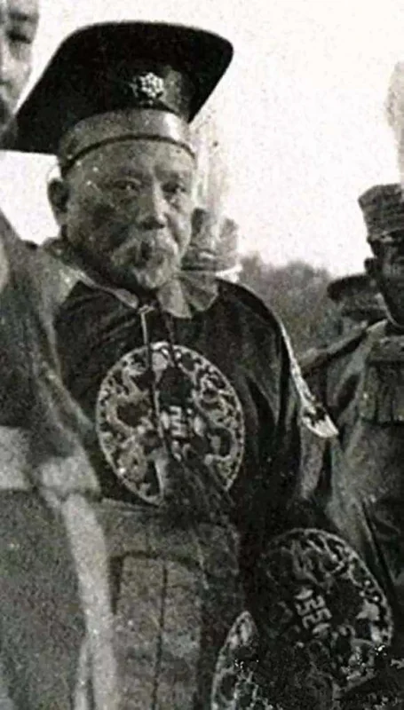
Q1 · The fiscal crisis · 1901–1911
The Boxer Indemnity Left the Court Broke
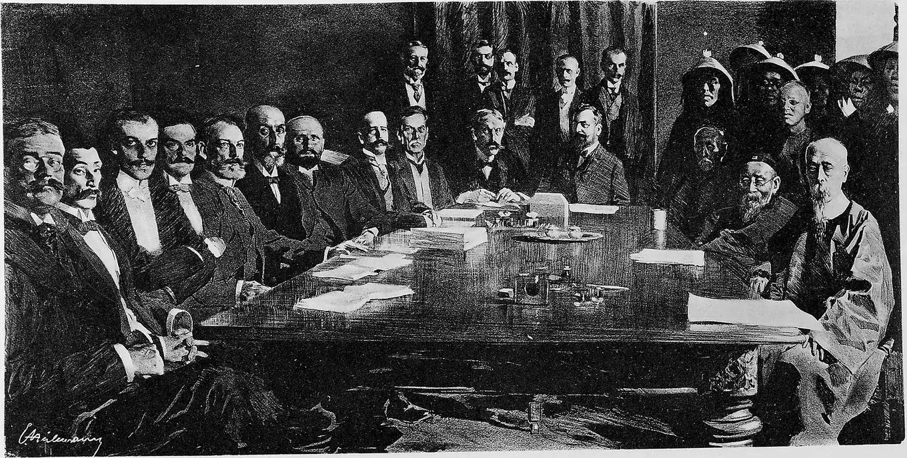
Sources: Ebrey, Ch. 24, p. 416.
Q1 · Local activism · 1901–1910
Local Elites Paid for Schools, Newspapers, and Protest
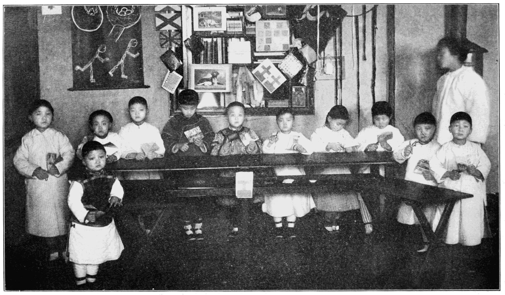
Sources: Ebrey, Ch. 24, p. 416.
Q1 · Court reform · 1905
In 1905 the Court Abolished the Exams
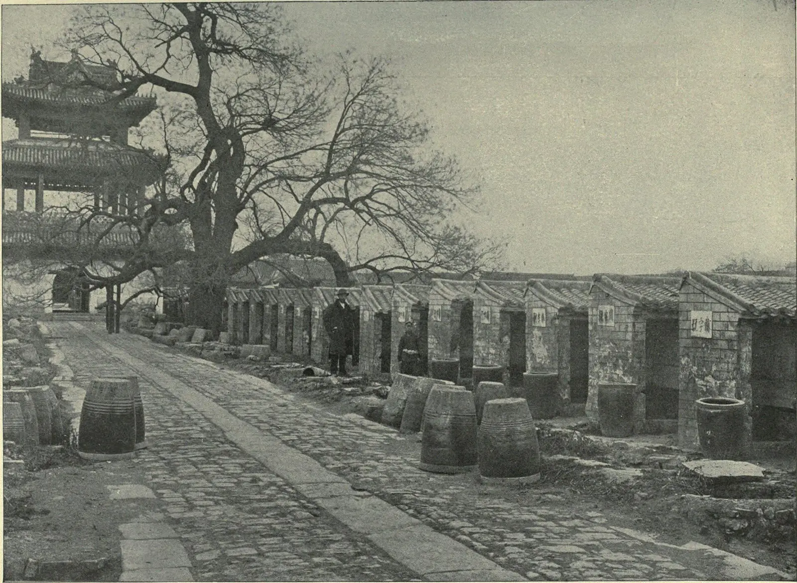
Sources: Ebrey, Ch. 24, pp. 417–418.
Q1 concept · Constitutional monarchy
Concept: A Constitutional Monarchy Keeps the Throne but Shares Power
Concept
Constitutional monarchy
A hereditary monarch reigns, but a constitution and an elected assembly share power.
Sources: Ebrey, Ch. 24, p. 418.
Watch · about 5 minutes · Beijing · 1908
Watch: A Two-Year-Old Takes the Dragon Throne, 1908

Film: The Last Emperor, dir. Bernardo Bertolucci (1987) · Photo: the regent, Prince Chun, with Puyi (standing), about 1909.
Q1 · Beijing · 1909–1911
The 1911 Cabinet Was Mostly Manchu Princes
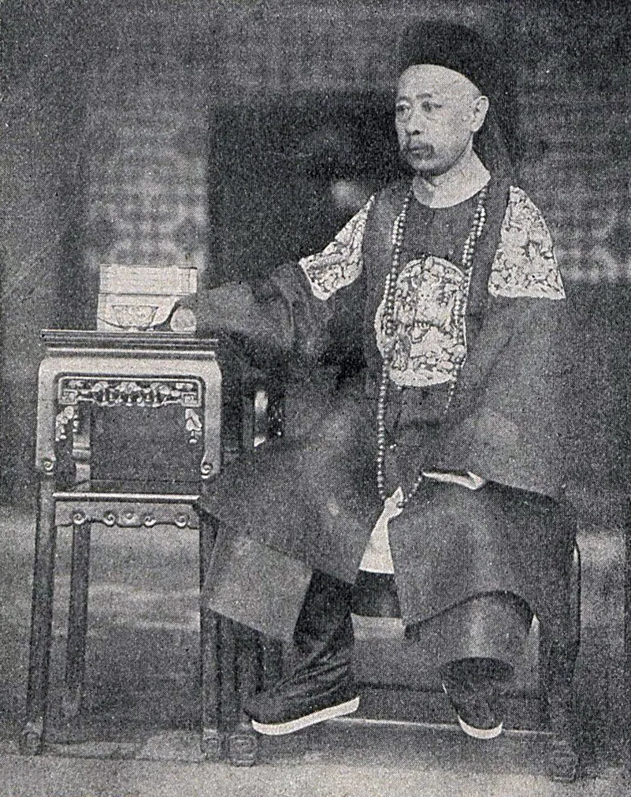
Sources: Ebrey, Ch. 24, p. 418.
Q2 · Tokyo · 1903–1906
Ten Thousand Students in Tokyo Asked Why Japan Grew Strong
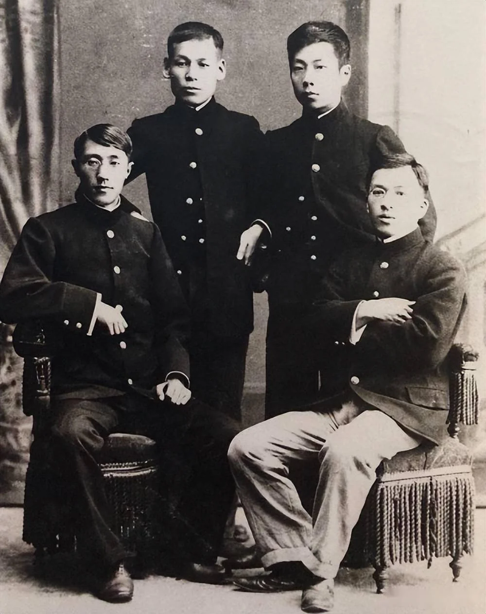
Sources: Ebrey, Ch. 24, pp. 416–417.
Q3 · Hawaii, Hong Kong, Tokyo · 1879–1911
Sun Yatsen Plotted Revolution from Abroad

Sources: Ebrey, Ch. 24, pp. 417–418.
Q3 concept · Sun's program
Concept: The Three People's Principles Were Sun's Program
Concept
The Three People's Principles
Nationalism, democracy, and the people’s livelihood.
Sources: Ebrey, Ch. 24, p. 418.
Q1 and Q3 · Wuchang · October 1911
In October 1911 an Accidental Bomb Set Off the Revolution
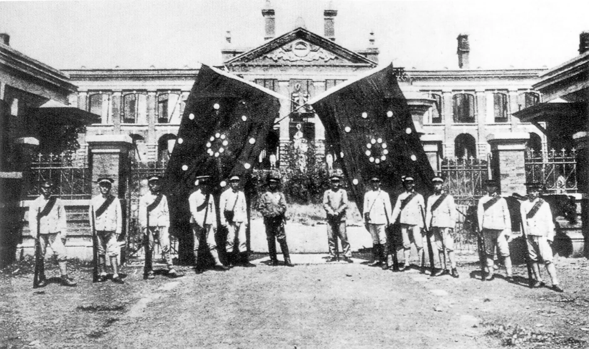
Sources: Ebrey, Ch. 24, p. 418.
Q1 and Q4 · Beijing · 1911–1912
Fifteen Provinces Left, and in February 1912 the Boy Emperor Abdicated
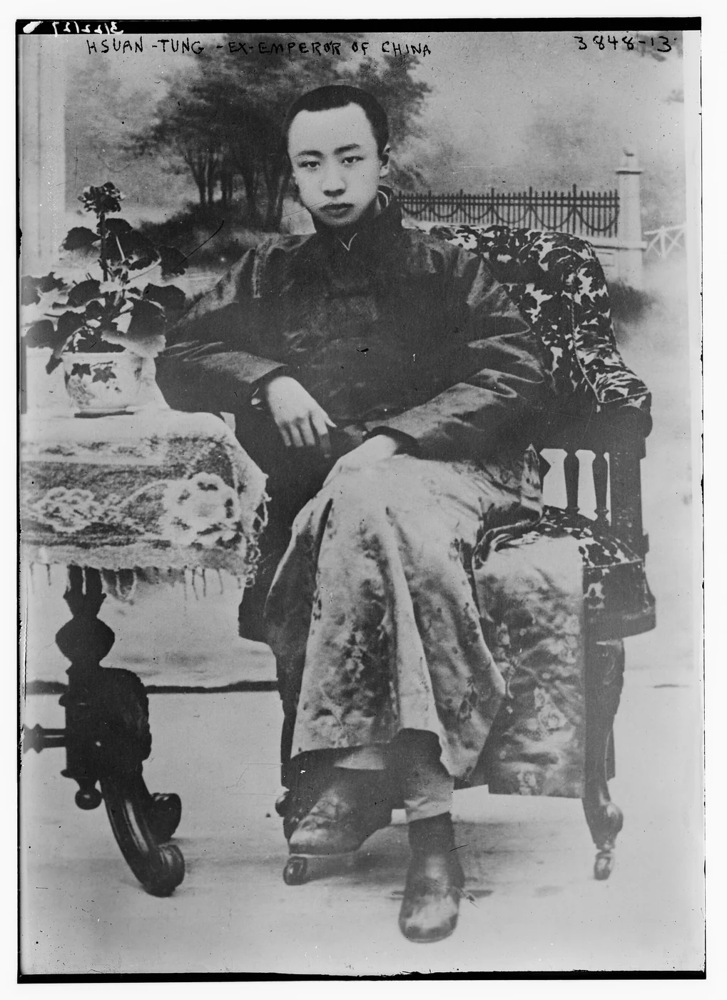
Sources: Ebrey, Ch. 24, pp. 418–419.
Your turn · Diagnosing China · about 18 minutes · on your own
Your Turn: Diagnose China the Way These Four Did
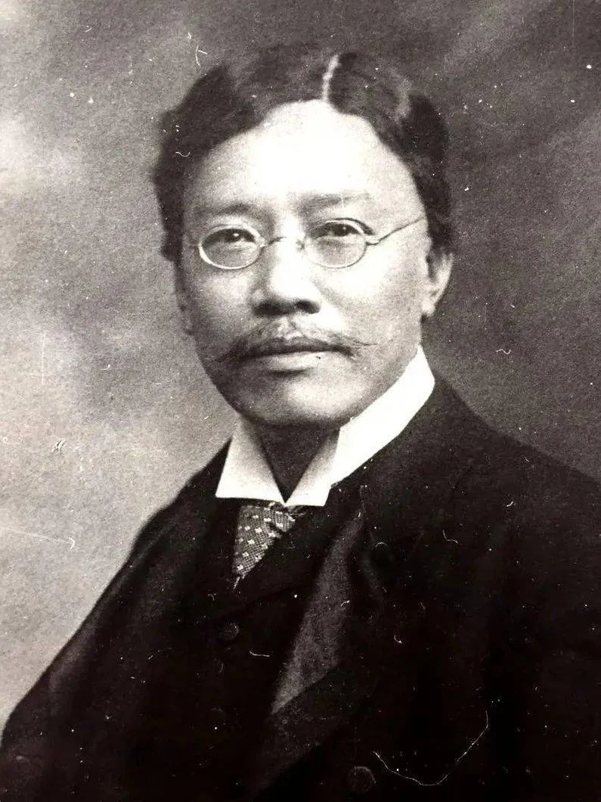
Yan FuTranslator of Western thought Liang QichaoReformer writing from exile
Liang QichaoReformer writing from exile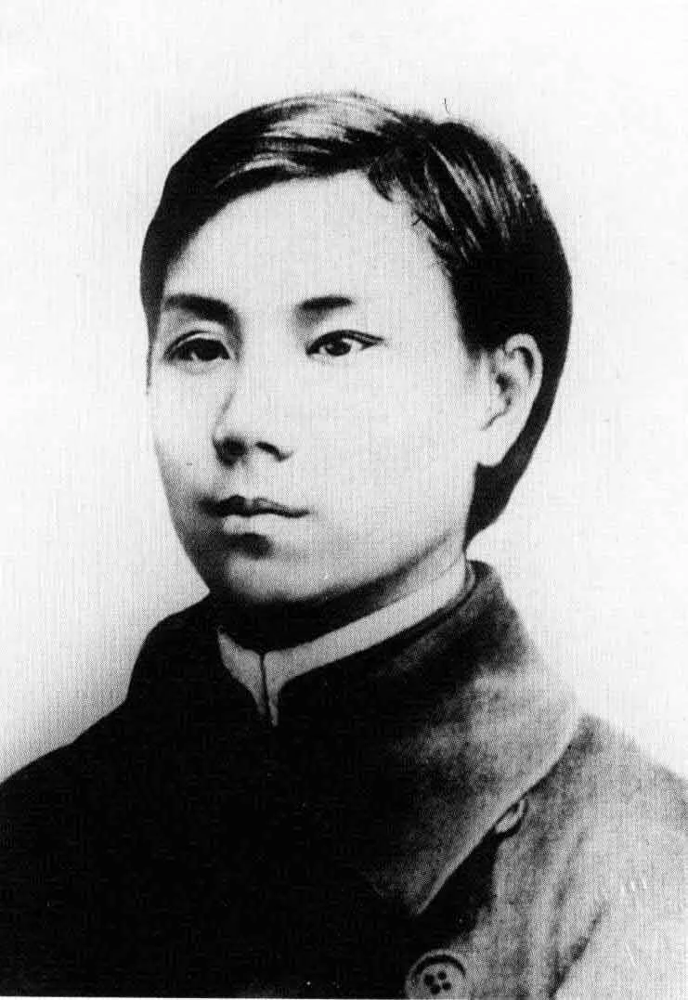
Zou RongAuthor of The Revolutionary ArmySun YatsenFounder of the Revolutionary AllianceQ4 · Who was Yuan Shikai? · 1898–1912
Yuan Shikai Had Built China's Strongest Modern Army
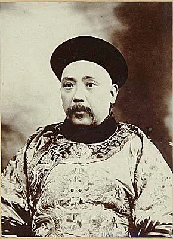
"Committed to a strong China but not a republican one." (Ebrey, p. 419)
Sources: Ebrey, Ch. 24, p. 419.
Q4 · The first elections · 1913
The Nationalists Won the 1913 Elections, and Their Organizer Was Shot
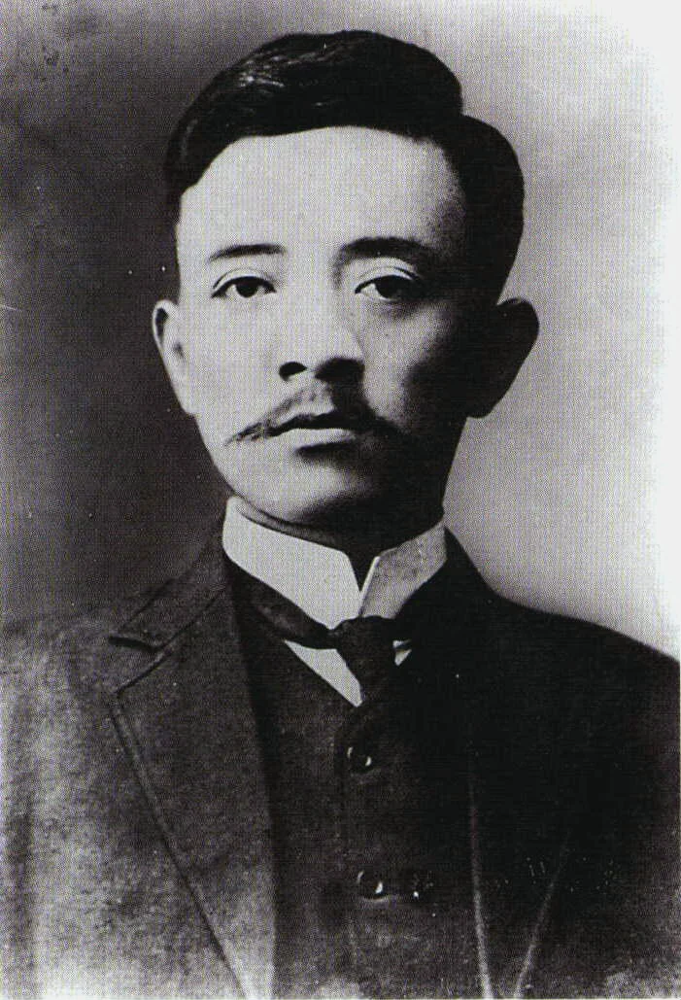
Sources: Ebrey, Ch. 24, p. 419.
Q4 · Money and force · 1913
Yuan Took a $100 Million Foreign Loan and Crushed a "Second Revolution"
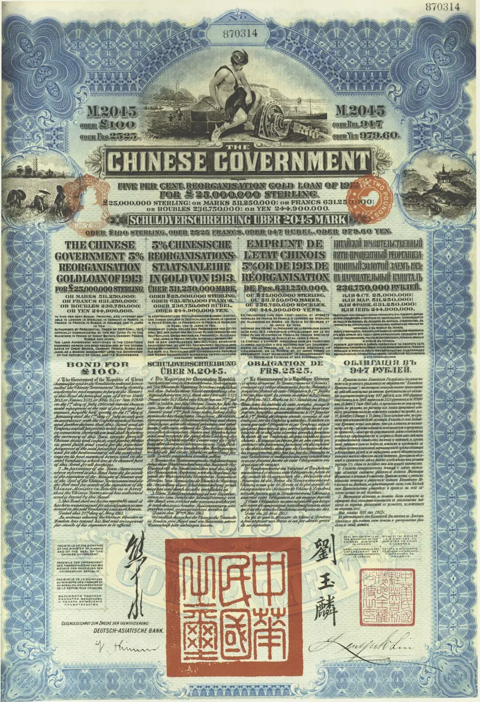
Sources: Ebrey, Ch. 24, p. 419.
Q4 concept · Autocracy
Concept: Autocracy Is One Man's Rule, Unchecked
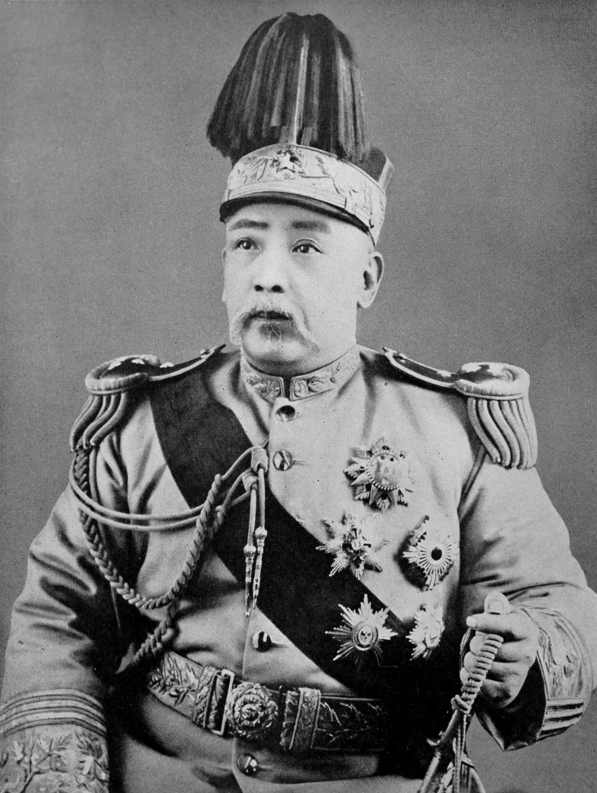
Concept
Autocracy
One ruler holds supreme power, unchecked by any assembly, party, court, or law.
Sources: Ebrey, Ch. 24, p. 419.
Q4 · Beijing · 1913–1914
Yuan Outlawed the Nationalists and Closed Every Assembly
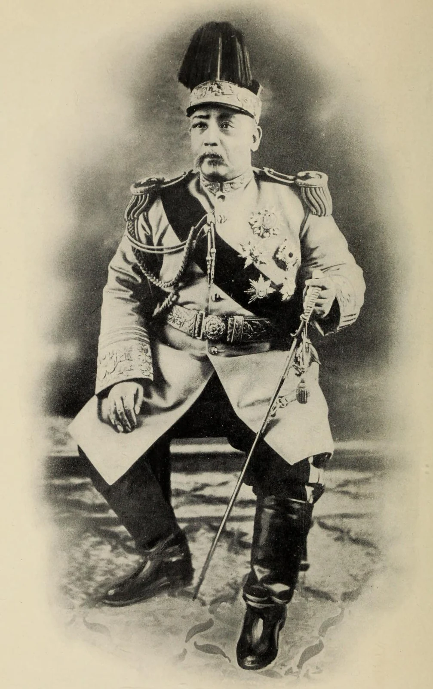
Sources: Ebrey, Ch. 24, p. 419.
Q4 · Beijing · 1915–1916
Yuan Made Himself Emperor in 1915 and Was Dead by June 1916
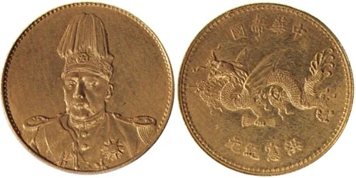
Sources: Ebrey, Ch. 24, p. 419.
Q5 concept · Warlord
Concept: A Warlord Ruled Territory with His Own Army
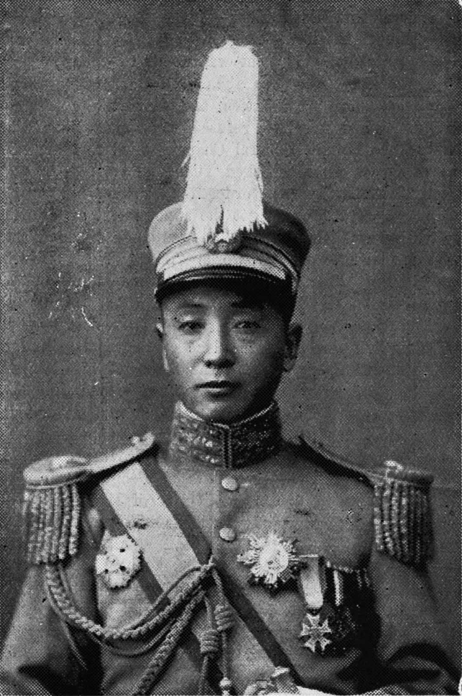
Concept
Warlord
A commander who rules a territory through his own army and answers to no government.
Sources: Ebrey, Ch. 24, pp. 419–420.
Q5 · China in pieces · 1916–1928
Six Presidents and Twenty-Five Cabinets Came and Went as China Broke Apart
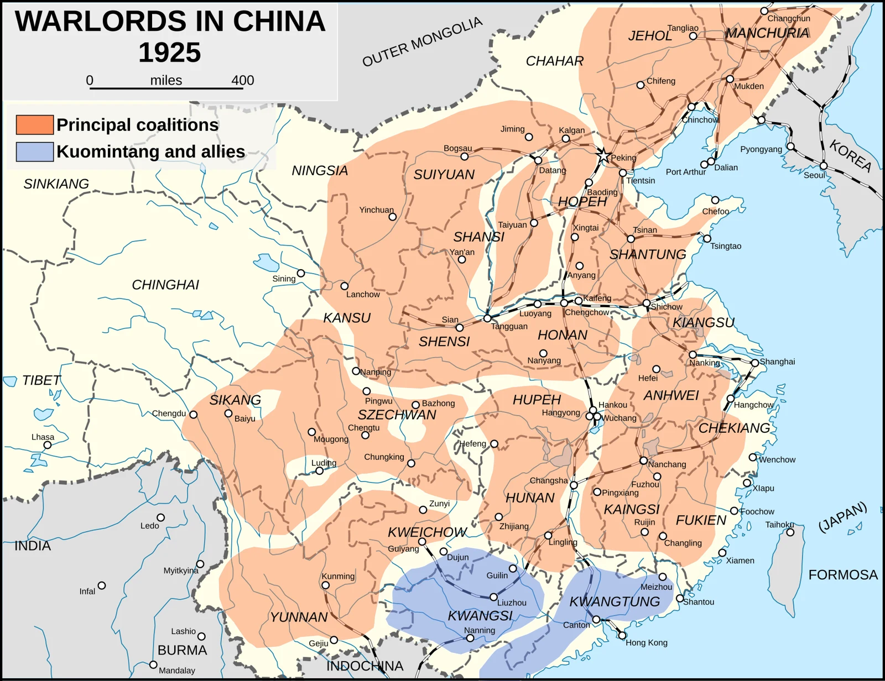
Sources: Ebrey, Ch. 24, pp. 419–420. Map: Hogweard after Rowanwindwhistler, CC BY-SA 3.0.
Q5 · The villages · 1916–1928
Soldiers Lived Off the Villages
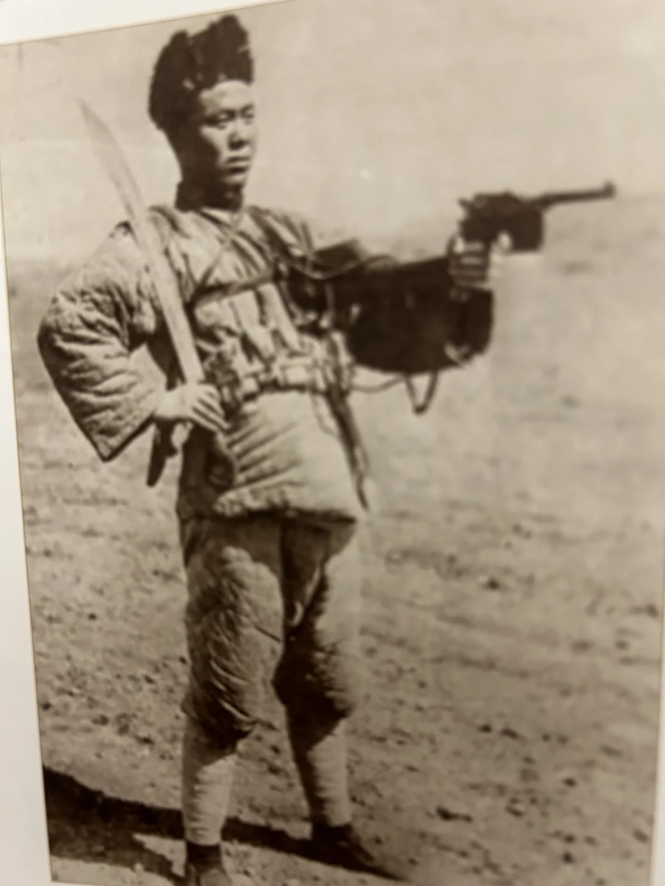
Sources: Ebrey, Ch. 24, p. 420.
Q5 · Railways and rivers · 1916–1928
Railways Broke Down and the Yellow River Dikes Decayed
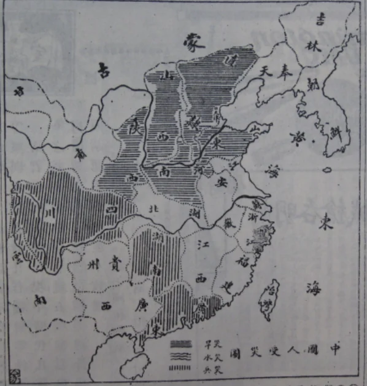
Sources: Ebrey, Ch. 24, p. 420.
Watch · about 12 minutes · the video pauses itself
Watch: China in Revolution
Exit ticket · about 3 minutes · on your own
Exit Ticket
Next class · Day B
Next Class: The Young Decide the Problem Is Culture
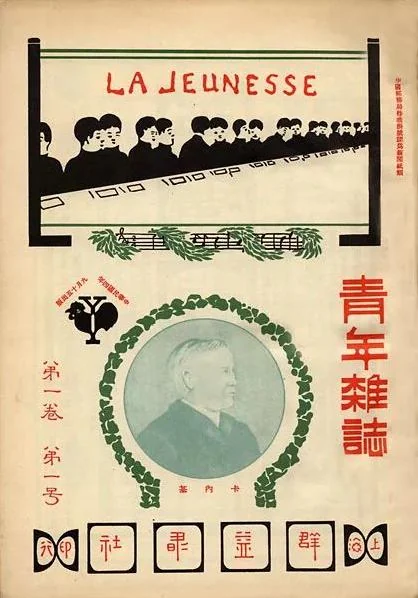
Sources: Ebrey, Ch. 24, pp. 419–420.
After class · On your own
After Class: Go Deeper in the Online Lectures
- Lecture 1, "Cutting the Queue" ↗: all of Part 1
- Lecture 2, "The President Who Would Be Emperor" ↗: Part 2, plus Question 8
- Reading Guide ↗: today was Questions 1 to 5
Sources and image credits
Sources
Patricia Buckley Ebrey, A History of China, Chapter 24, "Remaking China (1900–1927)," pp. 416–420.
Background essays: "Cutting the Queue" and "The President Who Would Be Emperor"; online decks Ch. 24 L1 and Ch. 24 L2, whose sources and credits this deck follows.
Joseph W. Esherick, Reform and Revolution in China (1976); Ernest P. Young, The Presidency of Yuan Shih-k'ai (1977); James E. Sheridan, China in Disintegration (1975); Lillian M. Li, Fighting Famine in North China (2007).
Film: The Last Emperor, directed by Bernardo Bertolucci (Columbia Pictures, 1987), theatrical cut, 0:13:15 to 0:18:20 (Cixi names Puyi heir; the enthronement).
Documentary: China: A Century of Revolution, Part 1, China in Revolution, 1911–1949, written and directed by Sue Williams (Ambrica Productions; PBS, 1989); shown as a classroom excerpt embedded from YouTube: “Warlords, May Fourth and the Northern Expedition (HIST 270 Clip A),” Seek Learning (unlisted, 12:30), with a closing segment by Professor Austin.
Map: “Warlords in China 1925,” by Hogweard after Rowanwindwhistler, Wikimedia Commons, licensed CC BY-SA 3.0.
Other images, all public domain via Wikimedia Commons: Yuan Shikai in sacrificial robes, 1914; Prince Chun with Puyi and Pujie, about 1909; Charles L. Bartholomew, "Cutting It Off," 1911; Boxer Protocol signing, 1901; Zhenjiang school, 1905; Beijing examination cells, 1899; Prince Qing, about 1901; Chinese students in Tokyo, 1903; "Some One Must Back Up," Judge, 1900; Sun Yatsen, 1911; Hubei Military Government, 1911; Puyi, about 1915–1920 (Library of Congress); Yan Fu, 1907; Liang Qichao, about 1917; Zou Rong, about 1903; Yuan Shikai and officers, 1912; Yuan Shikai, about 1900, 1914, 1915; Song Jiaoren; Reorganisation Loan bond, 1913; Hongxian coin, 1916; Zhang Zuolin; 1920s soldier; Shenbao famine map, 1921; Youth Magazine, 1915.